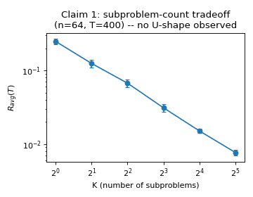
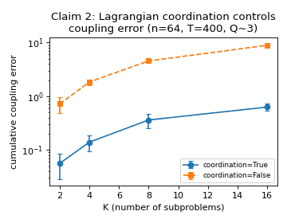
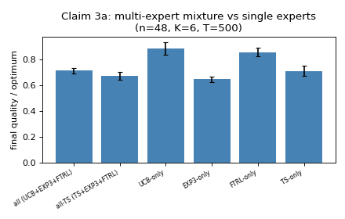
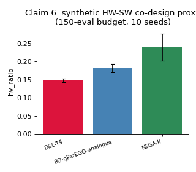

Multi-objective combinatorial optimization (TSP, knapsack, hardware-software co-design) under full-bandit feedback: only a scalar reward per queried solution, no gradients, no per-objective structure. At scale, the decision space is far too large for a single monolithic bandit to search directly.
Split n variables into K overlapping subproblems of size d=n/K (Def. 4.2). Each runs its own position-wise UCB/EXP3/FTRL mixture (Algorithm 2); a Lagrangian dual λ penalizes disagreement at overlapping positions (Algorithm 1), coordinating their otherwise-independent updates.

Paper claims regret depends only on subproblem size d, not the full decision space n (Corollary 5.3):
Decomposition beats a TRUE flat combinatorial bandit at tiny n (47.8 vs. 58.5 cumulative regret, T=300, n=8, |A|=3). But our fitted regret-vs-T exponent ≈ 0.98 (near-linear, n=64, K=8), far from the claimed sub-1 rate — plausibly because Algorithm 2's FTRL bonus, read literally, grows rather than shrinks with visit count, preventing exploration from annealing.
Coupling error across overlapping subproblems:

Ablation mirroring the paper's own Sec. 11.3: n=48, K=6, T=500, 6 reps (mixture); n=32–48, 6–12 reps (coordination).

The claim given to us said D&L=0.69 beats specialized=0.67 beats PMOCO=0.63 on Bi-TSP-100. The paper's own Table 1 says otherwise:
From-scratch Bi-KP/Bi-TSP, 15 seeds, 12 weight vectors/instance. hv_ratio = HV over a per-instance union reference point.
| Method | Bi-KP-50 ↑ | Bi-TSP-50 ↑ | Evals ↓ |
|---|---|---|---|
| WS-heuristic | 0.942 | 0.845 | 612 |
| NSGA-II | 0.909 | 0.280 | 2400 |
| BO-analogue | 0.528 | 0.084 | 396 |
| D&L | 0.379 | 0.045 | 1680 |
| D&L-TS | 0.317 | 0.046 | 1680 |
D&L/D&L-TS rank last of 5 on quality and evals — opposite of the claimed 80–98% specialized HV.
Paper's Table 2 (D&L-TS 0.372±0.006 > qParEGO 0.34±0.012) matches exactly — but on our synthetic proxy (no real accelerator simulator), the ranking flips:
